Mathematics solution NCERT
Class 9 - Chapter 6: Measuring Space: Perimeter and Area
Question 2.
An isosceles triangle has perimeter $40$ cm.
The equal sides are $15$ cm each. Find the area of the triangle.
Solution:
Given,
$$ \text{Perimeter}=40\text{ cm} $$ $$ \text{Equal sides}=15\text{ cm each} $$Step 1: Find the length of the base.
$$ \begin{aligned} \text{Base} &=40-15-15\\[4pt] &=10\text{ cm} \end{aligned} $$Step 2: Find the height of the triangle.
The perpendicular from the vertex to the base bisects the base.
Therefore,
$$ \begin{aligned} \frac{\text{Base}}{2} &=\frac{10}{2}\\[4pt] &=5\text{ cm} \end{aligned} $$Using Pythagoras' Theorem,
$$ \begin{aligned} h^2+5^2 &=15^2 \end{aligned} $$ $$ \begin{aligned} h^2+25 &=225 \end{aligned} $$ $$ \begin{aligned} h^2 &=225-25\\[4pt] &=200 \end{aligned} $$ $$ \begin{aligned} h &=\sqrt{200}\\[4pt] &=10\sqrt2\text{ cm} \end{aligned} $$Step 3: Find the area of the triangle.
We know that
$$ \text{Area} = \frac12\times\text{Base}\times\text{Height} $$Substitute the values.
$$ \begin{aligned} \text{Area} &=\frac12\times10\times10\sqrt2\\[4pt] &=50\sqrt2\text{ cm}^2 \end{aligned} $$Approximate value:
$$ \begin{aligned} 50\sqrt2 &\approx50\times1.414\\[4pt] &\approx70.71\text{ cm}^2 \end{aligned} $$Answer:
$$ \boxed{\text{Area}=50\sqrt2\text{ cm}^2} $$or approximately,
$$ \boxed{\text{Area}\approx70.71\text{ cm}^2} $$Question 3.
An isosceles triangle has base $10$ cm,
and its area is $60\text{ cm}^2$.
What are the lengths of the equal sides?
Solution:
Given,
$$ \text{Base}=10\text{ cm} $$ $$ \text{Area}=60\text{ cm}^2 $$Step 1: Find the height of the triangle.
We know that
$$ \text{Area} = \frac12\times\text{Base}\times\text{Height} $$Substitute the given values.
$$ \begin{aligned} 60 &=\frac12\times10\times h\\[4pt] 60 &=5h \end{aligned} $$ $$ \begin{aligned} h &=\frac{60}{5}\\[4pt] &=12\text{ cm} \end{aligned} $$Step 2: Find the equal sides.
The perpendicular from the vertex bisects the base.
Therefore,
$$ \frac{\text{Base}}{2} = \frac{10}{2} = 5\text{ cm} $$Using Pythagoras' Theorem,
$$ \begin{aligned} s^2 &=12^2+5^2\\[4pt] &=144+25\\[4pt] &=169 \end{aligned} $$ $$ \begin{aligned} s &=\sqrt{169}\\[4pt] &=13\text{ cm} \end{aligned} $$Answer:
The lengths of the equal sides are
$$ \boxed{13\text{ cm each}} $$Question 4.
The area of a right-angled triangle is $54\text{ cm}^2$.
One of its legs has length $12$ cm. Find its perimeter.
Solution:
Given,
$$ \text{Area}=54\text{ cm}^2 $$One leg of the triangle is
$$ 12\text{ cm} $$Step 1: Find the length of the other leg.
We know that
$$ \text{Area} = \frac12\times\text{Base}\times\text{Height} $$Let the other leg be $x$ cm.
Substitute the given values.
$$ \begin{aligned} 54 &=\frac12\times12\times x\\[4pt] 54 &=6x \end{aligned} $$ $$ \begin{aligned} x &=\frac{54}{6}\\[4pt] &=9\text{ cm} \end{aligned} $$Step 2: Find the hypotenuse.
Using Pythagoras' Theorem,
$$ \begin{aligned} h^2 &=12^2+9^2\\[4pt] &=144+81\\[4pt] &=225 \end{aligned} $$ $$ \begin{aligned} h &=\sqrt{225}\\[4pt] &=15\text{ cm} \end{aligned} $$Step 3: Find the perimeter.
$$ \begin{aligned} \text{Perimeter} &=12+9+15\\[4pt] &=36\text{ cm} \end{aligned} $$Answer:
$$ \boxed{\text{Perimeter}=36\text{ cm}} $$Question 5.
The sides of a triangle are in the ratio $2:3:4$,
and its perimeter is $45$ cm. Find its area.
Solution:
Let the sides of the triangle be
$$ 2x,\;3x,\;\text{and}\;4x. $$Given,
$$ \text{Perimeter}=45\text{ cm} $$Step 1: Find the value of $x$.
$$ \begin{aligned} 2x+3x+4x &=45\\[4pt] 9x &=45\\[4pt] x &=5 \end{aligned} $$Therefore, the sides of the triangle are
$$ 10\text{ cm},\;15\text{ cm},\;20\text{ cm}. $$Step 2: Find the semi-perimeter.
We know that
$$ s=\frac{a+b+c}{2} $$Hence,
$$ \begin{aligned} s &=\frac{10+15+20}{2}\\[4pt] &=\frac{45}{2}\\[4pt] &=22.5\text{ cm} \end{aligned} $$Step 3: Apply Heron's Formula.
We know that
$$ \text{Area} = \sqrt{s(s-a)(s-b)(s-c)} $$Substitute the values.
$$ \begin{aligned} \text{Area} &=\sqrt{22.5(22.5-10)(22.5-15)(22.5-20)}\\[4pt] &=\sqrt{22.5\times12.5\times7.5\times2.5} \end{aligned} $$Convert the decimals into fractions.
$$ \begin{aligned} \text{Area} &=\sqrt{\frac{45}{2}\times\frac{25}{2}\times\frac{15}{2}\times\frac{5}{2}}\\[4pt] &=\sqrt{\frac{84375}{16}}\\[4pt] &=\frac{\sqrt{84375}}{4} \end{aligned} $$Now simplify,
$$ \begin{aligned} 84375 &=625\times135\\[4pt] &=25^2\times9\times15 \end{aligned} $$ $$ \begin{aligned} \text{Area} &=\frac{25\times3\sqrt{15}}{4}\\[4pt] &=\frac{75\sqrt{15}}{4}\text{ cm}^2 \end{aligned} $$Approximate value:
$$ \begin{aligned} \text{Area} &\approx72.62\text{ cm}^2 \end{aligned} $$Answer:
$$ \boxed{\text{Area}=\frac{75\sqrt{15}}{4}\text{ cm}^2} $$or approximately,
$$ \boxed{\text{Area}\approx72.62\text{ cm}^2} $$Question 6.
The sides of a triangle have lengths $7$ cm, $24$ cm and $25$ cm.
Find the area of the triangle in two different ways.
Solution:
Given,
$$ a=7\text{ cm},\qquad b=24\text{ cm},\qquad c=25\text{ cm} $$Method 1: Using Heron's Formula
Step 1: Find the semi-perimeter.
$$ \begin{aligned} s &=\frac{a+b+c}{2}\\[4pt] &=\frac{7+24+25}{2}\\[4pt] &=\frac{56}{2}\\[4pt] &=28\text{ cm} \end{aligned} $$Step 2: Apply Heron's Formula.
$$ \text{Area} = \sqrt{s(s-a)(s-b)(s-c)} $$Substitute the values.
$$ \begin{aligned} \text{Area} &=\sqrt{28(28-7)(28-24)(28-25)}\\[4pt] &=\sqrt{28\times21\times4\times3}\\[4pt] &=\sqrt{7056}\\[4pt] &=84\text{ cm}^2 \end{aligned} $$Method 2: Using the Formula for a Right-angled Triangle
Check whether the triangle is right-angled.
$$ \begin{aligned} 7^2+24^2 &=49+576\\[4pt] &=625\\[4pt] &=25^2 \end{aligned} $$Since
$$ 7^2+24^2=25^2, $$the triangle is right-angled.
Its perpendicular sides are
$$ 7\text{ cm}\quad\text{and}\quad24\text{ cm}. $$Therefore,
$$ \begin{aligned} \text{Area} &=\frac12\times\text{Base}\times\text{Height}\\[4pt] &=\frac12\times7\times24\\[4pt] &=84\text{ cm}^2 \end{aligned} $$Hence, both methods give the same result.
Answer:
$$ \boxed{\text{Area of the triangle}=84\text{ cm}^2} $$Question 7.
If the wheel of a bicycle has a diameter of $60$ cm,
find how far a cyclist will have travelled after the wheel has rotated $100$ times.
Solution:
Given,
$$ \text{Diameter of the wheel}=60\text{ cm} $$Number of rotations
$$ 100 $$Step 1: Find the distance travelled in one rotation.
The distance travelled in one complete rotation is equal to the circumference of the wheel.
We know that
$$ \text{Circumference}=\pi d $$Using
$$ \pi=\frac{22}{7}, $$Substitute the value of the diameter.
$$ \begin{aligned} \text{Circumference} &=\frac{22}{7}\times60\\[4pt] &=\frac{1320}{7}\text{ cm} \end{aligned} $$Step 2: Find the distance travelled in $100$ rotations.
$$ \begin{aligned} \text{Distance} &=100\times\frac{1320}{7}\\[4pt] &=\frac{132000}{7}\text{ cm} \end{aligned} $$Step 3: Convert the distance into metres.
Since
$$ 100\text{ cm}=1\text{ m}, $$ $$ \begin{aligned} \text{Distance} &=\frac{132000}{7\times100}\text{ m}\\[4pt] &=\frac{1320}{7}\text{ m}\\[4pt] &\approx188.57\text{ m} \end{aligned} $$Answer:
$$ \boxed{\text{Distance travelled}=\frac{1320}{7}\text{ m}\approx188.57\text{ m}} $$Question 8.
Find the area of a quadrant of a circle
whose circumference is $66$ cm.
Solution:
Given,
$$ \text{Circumference}=66\text{ cm} $$Using
$$ \pi=\frac{22}{7}, $$we know that
$$ C=2\pi r. $$Step 1: Find the radius of the circle.
Substitute the given values.
$$ \begin{aligned} 66 &=2\times\frac{22}{7}\times r\\[4pt] 66 &=\frac{44r}{7} \end{aligned} $$Multiply both sides by $7$.
$$ \begin{aligned} 66\times7 &=44r \end{aligned} $$Divide both sides by $44$.
$$ \begin{aligned} r &=\frac{66\times7}{44}\\[4pt] &=10.5\text{ cm} \end{aligned} $$Step 2: Find the area of the circle.
We know that
$$ \text{Area of Circle} = \pi r^2. $$Substitute the values.
$$ \begin{aligned} \text{Area} &=\frac{22}{7}\times(10.5)^2\\[4pt] &=\frac{22}{7}\times110.25\\[4pt] &=346.5\text{ cm}^2 \end{aligned} $$Step 3: Find the area of the quadrant.
A quadrant is one-fourth of the circle.
$$ \begin{aligned} \text{Area of Quadrant} &=\frac14\times346.5\\[4pt] &=86.625\text{ cm}^2 \end{aligned} $$Answer:
$$ \boxed{\text{Area of the quadrant}=86.625\text{ cm}^2} $$Question 9.
The wheel of a car has an outer radius of $28$ cm.
Calculate how far the car travels after one complete turn of the wheel,
and how many times the wheel turns during a journey of $1$ km.
Solution:
Given,
$$ \text{Radius}=28\text{ cm} $$Using
$$ \pi=\frac{22}{7}, $$Step 1: Find the distance travelled in one complete turn.
The distance travelled in one complete turn is equal to the circumference of the wheel.
We know that
$$ \text{Circumference}=2\pi r. $$Substitute the given values.
$$ \begin{aligned} \text{Circumference} &=2\times\frac{22}{7}\times28\\[4pt] &=44\times4\\[4pt] &=176\text{ cm} \end{aligned} $$Therefore, the car travels
$$ \boxed{176\text{ cm}} $$or
$$ \boxed{1.76\text{ m}} $$in one complete turn of the wheel.
Step 2: Convert $1$ km into centimetres.
$$ \begin{aligned} 1\text{ km} &=1000\text{ m}\\[4pt] &=1000\times100\text{ cm}\\[4pt] &=100000\text{ cm} \end{aligned} $$Step 3: Find the number of turns.
Number of turns
$$ = \frac{\text{Total Distance}} {\text{Distance in One Turn}} $$ $$ \begin{aligned} \text{Number of Turns} &=\frac{100000}{176}\\[4pt] &=\frac{6250}{11}\\[4pt] &\approx568.18 \end{aligned} $$Hence, the wheel makes approximately
$$ \boxed{568\text{ turns}} $$during a journey of $1$ km.
Answer:
(i) Distance travelled in one complete turn
$$ \boxed{176\text{ cm}=1.76\text{ m}} $$(ii) Number of turns in $1$ km
$$ \boxed{\approx568\text{ turns}} $$Question 10.
Two rectangles have the same area and the same perimeter.
Does this mean that they are congruent to each other?
Solution:
Let the length and breadth of the first rectangle be
$$ l_1\text{ and }b_1. $$Let the length and breadth of the second rectangle be
$$ l_2\text{ and }b_2. $$According to the question,
$$ l_1b_1=l_2b_2 $$and
$$ 2(l_1+b_1)=2(l_2+b_2). $$Therefore,
$$ l_1+b_1=l_2+b_2. $$Let
$$ l_1+b_1=S $$and
$$ l_1b_1=P. $$Then the sides of the rectangle are the roots of the quadratic equation
$$ x^2-Sx+P=0. $$Similarly, the sides of the second rectangle also satisfy the same equation.
Hence, both rectangles have the same pair of side lengths.
The only possible difference is the order of the sides, such as
$$ (l,b)\quad\text{or}\quad(b,l), $$which represents the same rectangle.
Therefore, both rectangles have
- equal corresponding sides, and
- equal corresponding angles.
Hence, they are congruent.
Answer:
$$ \boxed{\text{Yes, two rectangles having the same area and the same perimeter are always congruent.}} $$Explanation:
The area determines the product of the length and breadth,
while the perimeter determines their sum.
A rectangle is uniquely determined by the sum and the product of its side lengths.
Therefore, the two rectangles must have identical dimensions and are congruent.
Question 11.
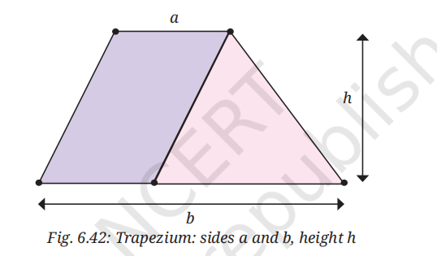
Image source- NCERT
You know that the area of a parallelogram is base $\times$ height.
Using this and the figure, show that the area of a trapezium is half the sum of the parallel sides multiplied by the height, i.e.,
Solution:
Consider the given trapezium having
- Parallel sides $a$ and $b$, where $b>a$.
- Height $h$.
As shown in the figure, a triangular portion is shifted from one side of the trapezium to the other.
This rearrangement forms a parallelogram.
Step 1: Find the base of the parallelogram.
The base of the parallelogram is equal to the average of the two parallel sides.
Therefore,
$$ \text{Base} = \frac{a+b}{2}. $$The height remains unchanged.
$$ \text{Height}=h. $$Step 2: Find the area of the parallelogram.
We know that
$$ \text{Area of Parallelogram} = \text{Base}\times\text{Height}. $$Substitute the values.
$$ \begin{aligned} \text{Area} &=\frac{a+b}{2}\times h\\[4pt] &=\frac12(a+b)h. \end{aligned} $$Step 3: Compare the two figures.
The parallelogram is obtained only by rearranging the parts of the trapezium.
No part is added or removed.
Hence,
$$ \boxed{ \text{Area of Trapezium} = \text{Area of Parallelogram}. } $$Therefore,
$$ \boxed{ \text{Area of Trapezium} = \frac12(a+b)h. } $$Hence, the required formula is
$$ \boxed{ \text{Area of Trapezium} = \frac12 (\text{Sum of Parallel Sides}) \times \text{Height}. } $$Hence Proved.
Question 12.
By dividing a trapezium into two triangles,
show that its area is half the sum of the parallel sides multiplied by the height,
i.e.,
Solution:
Let $ABCD$ be a trapezium in which
$$ AB\parallel CD, $$where
$$ AB=a,\qquad CD=b, $$and the perpendicular distance between the parallel sides is
$$ h. $$Draw the diagonal
$$ AC. $$This diagonal divides the trapezium into two triangles:
- $\triangle ABC$
- $\triangle ACD$
Step 1: Find the area of $\triangle ABC$.
The base of $\triangle ABC$ is
$$ AB=a. $$Its height is the perpendicular distance between the parallel sides, i.e.,
$$ h. $$Therefore,
$$ \begin{aligned} \text{Area}(\triangle ABC) &=\frac12\times a\times h\\[4pt] &=\frac12ah. \end{aligned} $$Step 2: Find the area of $\triangle ACD$.
The base of $\triangle ACD$ is
$$ CD=b. $$Its height is also
$$ h. $$Therefore,
$$ \begin{aligned} \text{Area}(\triangle ACD) &=\frac12\times b\times h\\[4pt] &=\frac12bh. \end{aligned} $$Step 3: Find the area of the trapezium.
The area of the trapezium is the sum of the areas of the two triangles.
$$ \begin{aligned} \text{Area of Trapezium} &=\text{Area}(\triangle ABC)+\text{Area}(\triangle ACD)\\[4pt] &=\frac12ah+\frac12bh\\[4pt] &=\frac12(a+b)h. \end{aligned} $$Hence,
$$ \boxed{ \text{Area of Trapezium} = \frac12(a+b)h } $$Hence Proved.
Question 13.
Show how we can use two identical copies of a trapezium
to make a parallelogram.
How will this give us the formula for the area of a trapezium?
Solution:
Consider a trapezium whose parallel sides are
$$ a \text{ and } b, $$and whose height is
$$ h. $$Take another identical copy of the trapezium.
Rotate the second trapezium by
$$ 180^\circ, $$and place it beside the first trapezium.
The two trapeziums together form a parallelogram.
Step 1: Find the base of the parallelogram.
The base of the newly formed parallelogram is equal to the sum of the parallel sides of the trapezium.
$$ \text{Base}=a+b. $$The height of the parallelogram is the same as the height of the trapezium.
$$ \text{Height}=h. $$Step 2: Find the area of the parallelogram.
We know that
$$ \text{Area of Parallelogram} = \text{Base}\times\text{Height}. $$Therefore,
$$ \begin{aligned} \text{Area of Parallelogram} &=(a+b)\times h\\[4pt] &=(a+b)h. \end{aligned} $$Step 3: Find the area of one trapezium.
The parallelogram is made up of two identical trapeziums.
Hence, the area of one trapezium is half the area of the parallelogram.
$$ \begin{aligned} \text{Area of Trapezium} &=\frac12\times(a+b)h\\[4pt] &=\frac12(a+b)h. \end{aligned} $$Therefore, the required formula is
$$ \boxed{ \text{Area of Trapezium} = \frac12(a+b)h } $$where
- $a$ and $b$ are the lengths of the parallel sides, and
- $h$ is the perpendicular distance between them.
Hence Proved.
Question 14.
Show that the area of a kite is half the product of its diagonals.
Show this:
(i) Using Algebra
(ii) Using Geometry
(i) Using Algebra
Solution:
Let the diagonals of the kite be
$$ d_1 \text{ and } d_2. $$The diagonals of a kite intersect each other at right angles.
Let the diagonals intersect at point $O$.
Suppose
$$ AO=x,\qquad OC=d_1-x. $$Also, let
$$ BO=\frac{d_2}{2}, \qquad OD=\frac{d_2}{2}. $$The kite is divided into four right-angled triangles.
The total area of the kite is the sum of the areas of these four triangles.
The upper two triangles together have base
$$ d_2 $$and height
$$ x. $$Therefore,
$$ \begin{aligned} A_1 &=\frac12\times d_2\times x. \end{aligned} $$The lower two triangles together have the same base
$$ d_2 $$and height
$$ d_1-x. $$Hence,
$$ \begin{aligned} A_2 &=\frac12\times d_2\times(d_1-x). \end{aligned} $$Total area of the kite is
$$ \begin{aligned} A &=A_1+A_2\\[4pt] &=\frac12d_2x+\frac12d_2(d_1-x)\\[4pt] &=\frac12d_2(x+d_1-x)\\[4pt] &=\frac12d_1d_2. \end{aligned} $$Therefore,
$$ \boxed{ \text{Area of Kite} = \frac12d_1d_2. } $$(ii) Using Geometry
Solution:
Draw both diagonals of the kite.
The diagonals divide the kite into four right-angled triangles.
The area of each triangle is
$$ \frac12\times\text{Base}\times\text{Height}. $$Adding the areas of all four triangles gives the total area of the kite.
The combined base of the four triangles is one diagonal
$$ d_2, $$and the combined height is the other diagonal
$$ d_1. $$Hence,
$$ \begin{aligned} \text{Area of Kite} &=\frac12\times d_1\times d_2. \end{aligned} $$Therefore,
$$ \boxed{ \text{Area of Kite} = \frac12d_1d_2. } $$Hence, by both algebraic and geometric methods,
$$ \boxed{ \text{Area of Kite} = \frac12 \times (\text{Product of its diagonals}) } $$Hence Proved.
Question 15 (i).
Rectangle $ABCD$ has sides $a$, $b$, and rectangle $PQRS$ has sides $2a$, $2b$.
Show that rectangle $PQRS$ has $4$ times the area of rectangle $ABCD$.
Does this mean that $4$ copies of rectangle $ABCD$ will fit into rectangle $PQRS$? Check and see!
Solution:
Step 1: Find the area of rectangle $ABCD$.
We know that
$$ \text{Area of Rectangle} = \text{Length}\times\text{Breadth}. $$Therefore,
$$ \begin{aligned} \text{Area}(ABCD) &=a\times b\\[4pt] &=ab. \end{aligned} $$Step 2: Find the area of rectangle $PQRS$.
The dimensions of rectangle $PQRS$ are
$$ 2a \quad\text{and}\quad 2b. $$Therefore,
$$ \begin{aligned} \text{Area}(PQRS) &=(2a)(2b)\\[4pt] &=4ab. \end{aligned} $$Step 3: Compare the two areas.
$$ \begin{aligned} \frac{\text{Area}(PQRS)} {\text{Area}(ABCD)} &=\frac{4ab}{ab}\\[4pt] &=4. \end{aligned} $$Hence,
$$ \boxed{ \text{Area}(PQRS)=4\times\text{Area}(ABCD). } $$Step 4: Can four copies of rectangle $ABCD$ fit into rectangle $PQRS$?
Yes.
Since the length and breadth of $PQRS$ are exactly twice those of $ABCD$, we can place
- 2 copies along the length, and
- 2 copies along the breadth.
Thus, the total number of copies is
$$ 2\times2=4. $$Therefore, four congruent copies of rectangle $ABCD$ fit exactly inside rectangle $PQRS$ without any gap or overlap.
Answer:
$$ \boxed{ \text{Area}(PQRS)=4\times\text{Area}(ABCD). } $$ $$ \boxed{ \text{Yes, exactly }4\text{ copies of rectangle }ABCD\text{ fit into rectangle }PQRS. } $$Question 15 (ii).
$\triangle ABC$ has sides $a$, $b$, $c$, and $\triangle PQR$ has sides $2a$, $2b$, $2c$.
Show that $\triangle PQR$ has $4$ times the area of $\triangle ABC$.
Does this mean that $4$ copies of $\triangle ABC$ will fit into $\triangle PQR$? Check and see!
Solution:
Step 1: Let the area of $\triangle ABC$ be $A$.
The corresponding sides of $\triangle PQR$ are twice those of $\triangle ABC$.
$$ \frac{PQ}{AB} = \frac{QR}{BC} = \frac{PR}{AC} = 2. $$Hence, the two triangles are similar.
Step 2: Use the property of similar triangles.
For similar triangles, the ratio of their areas is equal to the square of the ratio of their corresponding sides.
$$ \frac{\text{Area}(\triangle PQR)} {\text{Area}(\triangle ABC)} = \left(\frac{PQ}{AB}\right)^2. $$Substitute the value.
$$ \begin{aligned} \frac{\text{Area}(\triangle PQR)} {\text{Area}(\triangle ABC)} &=2^2\\[4pt] &=4. \end{aligned} $$Therefore,
$$ \boxed{ \text{Area}(\triangle PQR) = 4\times \text{Area}(\triangle ABC). } $$Step 3: Can four copies of $\triangle ABC$ fit into $\triangle PQR$?
Yes.
Since every side of $\triangle PQR$ is exactly twice the corresponding side of $\triangle ABC$, the larger triangle can be divided into four congruent triangles, each congruent to $\triangle ABC$.
This can be done by joining the midpoints of the three sides of $\triangle PQR$.
The four smaller triangles obtained are congruent.
Hence, exactly
$$ 4 $$copies of $\triangle ABC$ fit perfectly inside $\triangle PQR$ without any gap or overlap.
Answer:
$$ \boxed{ \text{Area}(\triangle PQR) = 4\times \text{Area}(\triangle ABC). } $$ $$ \boxed{ \text{Yes, exactly }4\text{ copies of }\triangle ABC\text{ fit into }\triangle PQR. } $$Question 15 (iii).
$\triangle ABC$ has sides $a$, $b$, $c$, and $\triangle PQR$ has sides $3a$, $3b$, $3c$.
Show that $\triangle PQR$ has $9$ times the area of $\triangle ABC$.
Does this mean that $9$ copies of $\triangle ABC$ will fit into $\triangle PQR$? Check and see!
Solution:
Step 1: Show that the two triangles are similar.
The corresponding sides of the two triangles are proportional.
$$ \frac{PQ}{AB} = \frac{QR}{BC} = \frac{PR}{AC} = 3. $$Hence,
$$ \triangle ABC \sim \triangle PQR. $$Step 2: Compare their areas.
We know that for similar triangles, the ratio of their areas is equal to the square of the ratio of their corresponding sides.
$$ \frac{\text{Area}(\triangle PQR)} {\text{Area}(\triangle ABC)} = \left(\frac{PQ}{AB}\right)^2. $$Substitute the value.
$$ \begin{aligned} \frac{\text{Area}(\triangle PQR)} {\text{Area}(\triangle ABC)} &=3^2\\[4pt] &=9. \end{aligned} $$Therefore,
$$ \boxed{ \text{Area}(\triangle PQR) = 9\times \text{Area}(\triangle ABC). } $$Step 3: Can nine copies of $\triangle ABC$ fit into $\triangle PQR$?
Yes.
Since every side of $\triangle PQR$ is exactly three times the corresponding side of $\triangle ABC$, the larger triangle can be divided into nine congruent triangles, each congruent to $\triangle ABC$.
This can be done by drawing lines parallel to the three sides of the triangle at equal intervals.
The triangle is then divided into
$$ 9 $$equal congruent triangles.
Thus, exactly nine copies of $\triangle ABC$ fit perfectly inside $\triangle PQR$ without any gap or overlap.
Answer:
$$ \boxed{ \text{Area}(\triangle PQR) = 9\times \text{Area}(\triangle ABC). } $$ $$ \boxed{ \text{Yes, exactly }9\text{ copies of }\triangle ABC\text{ fit into }\triangle PQR. } $$Question 16 (i).
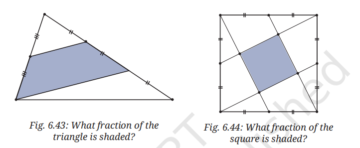
Image source- NCERT
In Fig. 6.43, what fraction of the triangle is shaded?
Solution:
Let the large triangle be $\triangle ABC$.
Let
- $D$ be the midpoint of $AB$, and
- $E$ and $F$ divide $BC$ into three equal parts.
The shaded region is quadrilateral $ADEF$.
Step 1: Find the area of $\triangle BDE$.
Since $D$ is the midpoint of $AB$,
$$ BD=\frac12\,AB. $$Also,
$$ BE=\frac13\,BC. $$Triangles $BDE$ and $BAC$ have the same included angle at $B$. Therefore,
$$ \begin{aligned} \frac{\text{Area}(\triangle BDE)} {\text{Area}(\triangle BAC)} &=\frac{BD}{BA}\times\frac{BE}{BC}\\[4pt] &=\frac12\times\frac13\\[4pt] &=\frac16. \end{aligned} $$Hence,
$$ \boxed{ \text{Area}(\triangle BDE) = \frac16\, \text{Area}(\triangle ABC). } $$Step 2: Find the area of $\triangle AFC$.
Since
$$ FC=\frac13\,BC, $$and triangles $AFC$ and $ABC$ have the same altitude from $A$,
$$ \begin{aligned} \frac{\text{Area}(\triangle AFC)} {\text{Area}(\triangle ABC)} &=\frac{FC}{BC}\\[4pt] &=\frac13. \end{aligned} $$Therefore,
$$ \boxed{ \text{Area}(\triangle AFC) = \frac13\, \text{Area}(\triangle ABC). } $$Step 3: Find the shaded area.
The shaded quadrilateral is obtained after removing the two unshaded triangles from the large triangle.
$$ \begin{aligned} \text{Shaded Area} &=\text{Area}(\triangle ABC) -\text{Area}(\triangle BDE) -\text{Area}(\triangle AFC)\\[4pt] &=\left(1-\frac16-\frac13\right) \text{Area}(\triangle ABC)\\[4pt] &=\left(1-\frac16-\frac26\right) \text{Area}(\triangle ABC)\\[4pt] &=\frac36\, \text{Area}(\triangle ABC)\\[4pt] &=\frac12\, \text{Area}(\triangle ABC). \end{aligned} $$Answer:
$$ \boxed{\text{The shaded portion is }\frac12\text{ of the area of the triangle}.} $$Question 16 (ii).
In Fig. 6.44, what fraction of the square is shaded?
Solution:
Let the area of the given square be
$$ 1\text{ square unit}. $$The marks on the figure show that the points on each side are the midpoints of the sides.
The lines joining the vertices and the midpoints divide the square into several triangles and one central quadrilateral.
The shaded region is the central quadrilateral.
Step 1: Observe the four corner regions.
The four corner regions are congruent triangles.
Each corner triangle occupies
$$ \frac18 $$of the area of the whole square.
Hence, the total area of the four corner triangles is
$$ \begin{aligned} 4\times\frac18 &=\frac48\\[4pt] &=\frac12. \end{aligned} $$Step 2: Find the shaded area.
The shaded quadrilateral occupies the remaining part of the square.
Therefore,
$$ \begin{aligned} \text{Shaded Area} &=1-\frac12\\[4pt] &=\frac12. \end{aligned} $$Answer:
$$ \boxed{\text{The shaded portion is }\frac12\text{ of the area of the square}.} $$Question 17 (i).
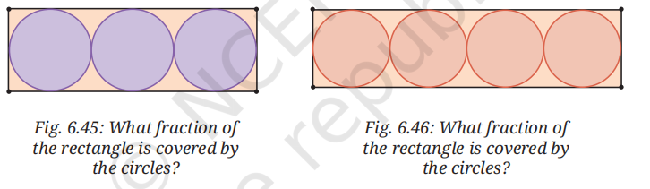
Image source- NCERT
In Fig. 6.45, three equal circles are fitted inside a rectangle.
What fraction of the rectangle is covered by the circles?
Solution:
Let the radius of each circle be
$$ r. $$Step 1: Find the dimensions of the rectangle.
Since three equal circles are placed side by side,
- Length of the rectangle
- Breadth of the rectangle
Step 2: Find the area of the rectangle.
$$ \begin{aligned} \text{Area of Rectangle} &=6r\times2r\\[4pt] &=12r^2. \end{aligned} $$Step 3: Find the total area of the three circles.
Area of one circle is
$$ \pi r^2. $$Therefore, the total area of three circles is
$$ \begin{aligned} 3\times\pi r^2 &=3\pi r^2. \end{aligned} $$Step 4: Find the required fraction.
$$ \begin{aligned} \frac{\text{Area covered by the circles}} {\text{Area of the rectangle}} &=\frac{3\pi r^2}{12r^2}\\[4pt] &=\frac{\pi}{4}. \end{aligned} $$Thus, the fraction of the rectangle covered by the circles is
$$ \boxed{\frac{\pi}{4}}. $$Using
$$ \pi\approx3.14, $$ $$ \begin{aligned} \frac{\pi}{4} &=\frac{3.14}{4}\\[4pt] &\approx0.785. \end{aligned} $$Hence, about
$$ \boxed{78.5\%} $$of the rectangle is covered by the circles.
Answer:
$$ \boxed{\frac{\pi}{4}\approx0.785} $$Question 17 (ii).
In Fig. 6.46, four equal circles are fitted inside a rectangle.
What fraction of the rectangle is covered by the circles?
Solution:
Let the radius of each circle be
$$ r. $$Step 1: Find the dimensions of the rectangle.
Since four equal circles are placed side by side,
- Length of the rectangle
- Breadth of the rectangle
Step 2: Find the area of the rectangle.
$$ \begin{aligned} \text{Area of Rectangle} &=8r\times2r\\[4pt] &=16r^2. \end{aligned} $$Step 3: Find the total area of the four circles.
Area of one circle is
$$ \pi r^2. $$Therefore, the total area of four circles is
$$ \begin{aligned} 4\times\pi r^2 &=4\pi r^2. \end{aligned} $$Step 4: Find the required fraction.
$$ \begin{aligned} \frac{\text{Area covered by the circles}} {\text{Area of the rectangle}} &=\frac{4\pi r^2}{16r^2}\\[4pt] &=\frac{\pi}{4}. \end{aligned} $$Thus, the fraction of the rectangle covered by the circles is
$$ \boxed{\frac{\pi}{4}}. $$Using
$$ \pi\approx3.14, $$ $$ \begin{aligned} \frac{\pi}{4} &=\frac{3.14}{4}\\[4pt] &\approx0.785. \end{aligned} $$Hence, about
$$ \boxed{78.5\%} $$of the rectangle is covered by the circles.
Answer:
$$ \boxed{\frac{\pi}{4}\approx0.785} $$Observation:
Although the number of circles has increased from $3$ to $4$, the fraction of the rectangle covered by the circles remains the same because both the area of the circles and the area of the rectangle increase in the same proportion.
Question 18.
Use the above to make a conjecture about the area occupied by circles fitted into a rectangle in the manner shown.
Test your conjecture for particular cases: $10$ circles, $20$ circles, $50$ circles.
Then prove your conjecture.
Solution:
Step 1: Observe the pattern.
From Question 17, we found that:
- For $3$ circles, the fraction covered is $\dfrac{\pi}{4}$.
- For $4$ circles, the fraction covered is also $\dfrac{\pi}{4}$.
This suggests that the fraction covered does not depend on the number of circles.
Hence, we make the following conjecture.
$$ \boxed{ \text{Fraction of the rectangle covered by the circles} = \frac{\pi}{4}. } $$Step 2: Test the conjecture.
Let the radius of each circle be
$$ r. $$Suppose there are
$$ n $$equal circles placed side by side.
The length of the rectangle is
$$ 2nr, $$and the breadth is
$$ 2r. $$Therefore,
$$ \begin{aligned} \text{Area of Rectangle} &=(2nr)(2r)\\[4pt] &=4nr^2. \end{aligned} $$The total area of the circles is
$$ \begin{aligned} n\pi r^2. \end{aligned} $$Hence,
$$ \begin{aligned} \frac{\text{Area covered by circles}} {\text{Area of Rectangle}} &=\frac{n\pi r^2}{4nr^2}\\[4pt] &=\frac{\pi}{4}. \end{aligned} $$Thus, the fraction remains the same for every value of $n$.
Step 3: Verify for specific cases.
(i) For $10$ circles
$$ \boxed{ \frac{\text{Area covered}} {\text{Area of Rectangle}} = \frac{\pi}{4} \approx0.785. } $$(ii) For $20$ circles
$$ \boxed{ \frac{\text{Area covered}} {\text{Area of Rectangle}} = \frac{\pi}{4} \approx0.785. } $$(iii) For $50$ circles
$$ \boxed{ \frac{\text{Area covered}} {\text{Area of Rectangle}} = \frac{\pi}{4} \approx0.785. } $$Step 4: Proof of the conjecture.
Let there be
$$ n $$equal circles of radius
$$ r. $$Total area of the circles is
$$ n\pi r^2. $$The rectangle containing them has dimensions
$$ 2nr \quad\text{and}\quad 2r. $$Hence, its area is
$$ 4nr^2. $$Therefore,
$$ \begin{aligned} \frac{\text{Area covered by circles}} {\text{Area of Rectangle}} &=\frac{n\pi r^2}{4nr^2}\\[4pt] &=\frac{\pi}{4}. \end{aligned} $$The value is independent of
$$ n. $$Hence, for any number of equal circles fitted in this manner, the fraction of the rectangle covered by the circles is always
$$ \boxed{\frac{\pi}{4}}. $$Answer:
$$ \boxed{ \text{For any number of equal circles arranged in a row inside a rectangle,} } $$ $$ \boxed{ \frac{\text{Area covered by the circles}} {\text{Area of the rectangle}} = \frac{\pi}{4} \approx0.785. } $$Hence Proved.
Question 19.
The figure shows nine identical rectangles fitted together
to make a large rectangle whose area is $72\text{ cm}^2$.
Find the perimeter of each small rectangle.
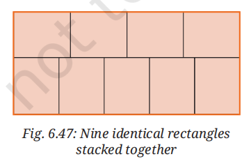
Image source- NCERT
Solution:
Let the length and breadth of each small rectangle be
$$ l\text{ cm}\quad\text{and}\quad b\text{ cm}, $$where
$$ l>b. $$Step 1: Form an equation using the width of the large rectangle.
From the figure,
- The top row consists of $4$ horizontal rectangles.
- The bottom row consists of $5$ vertical rectangles.
Hence, the total widths are equal.
$$ 4l=5b. $$Therefore,
$$ \boxed{l=\frac54\,b.} $$Step 2: Use the area of the large rectangle.
The large rectangle is made up of
$$ 9 $$identical rectangles.
Hence, the area of one small rectangle is
$$ \begin{aligned} \frac{72}{9} &=8\text{ cm}^2. \end{aligned} $$Therefore,
$$ lb=8. $$Substitute
$$ l=\frac54b. $$ $$ \begin{aligned} \frac54b^2 &=8\\[4pt] b^2 &=\frac{32}{5}. \end{aligned} $$Hence,
$$ \begin{aligned} b &=\sqrt{\frac{32}{5}} =\frac{4\sqrt{10}}{5}\text{ cm}. \end{aligned} $$Now,
$$ \begin{aligned} l &=\frac54\times\frac{4\sqrt{10}}5\\[4pt] &=\sqrt{10}\text{ cm}. \end{aligned} $$Step 3: Find the perimeter of one small rectangle.
$$ \begin{aligned} \text{Perimeter} &=2(l+b)\\[4pt] &=2\left(\sqrt{10}+\frac{4\sqrt{10}}5\right)\\[4pt] &=2\left(\frac{9\sqrt{10}}5\right)\\[4pt] &=\frac{18\sqrt{10}}5\text{ cm}. \end{aligned} $$Approximate value:
$$ \begin{aligned} \text{Perimeter} &\approx\frac{18\times3.162}{5}\\[4pt] &\approx11.38\text{ cm}. \end{aligned} $$Answer:
$$ \boxed{\text{Perimeter of each small rectangle}=\frac{18\sqrt{10}}5\text{ cm}\approx11.38\text{ cm}.} $$Question 20.
Show that the areas of the shaded blue triangle and the shaded red triangle are equal.
Find a way of cutting up the blue triangle into some number of pieces
and rearranging the pieces to cover the red triangle.
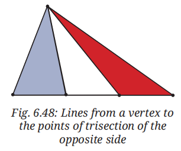
Image source- NCERT
Solution:
Let the large triangle be $\triangle ABC$.
Let the points
$$ D\quad\text{and}\quad E $$divide the base
$$ BC $$into three equal parts.
Therefore,
$$ BD=DE=EC. $$Step 1: Compare the blue and red triangles.
The blue triangle is
$$ \triangle ABD, $$and the red triangle is
$$ \triangle AEC. $$Both triangles have their vertices at
$$ A, $$and their bases lie on the same straight line
$$ BC. $$Hence, both triangles have the same height.
Step 2: Compare their bases.
Since the base is divided into three equal parts,
$$ BD=EC. $$Step 3: Compare their areas.
We know that
$$ \text{Area of Triangle} = \frac12\times\text{Base}\times\text{Height}. $$Therefore,
$$ \begin{aligned} \text{Area}(\triangle ABD) &=\frac12\times BD\times h, \end{aligned} $$and
$$ \begin{aligned} \text{Area}(\triangle AEC) &=\frac12\times EC\times h. \end{aligned} $$Since
$$ BD=EC, $$we obtain
$$ \boxed{ \text{Area}(\triangle ABD) = \text{Area}(\triangle AEC). } $$Hence, the shaded blue triangle and the shaded red triangle have equal areas.
Rearrangement of the blue triangle
Draw the median from the vertex $A$ of the blue triangle to the midpoint of its base.
This divides the blue triangle into two congruent triangles.
Rotate and translate these two pieces appropriately.
Since the red triangle has the same base length and the same height as the blue triangle, the two pieces fit together exactly to cover the red triangle.
Thus, the blue triangle can be cut into two pieces and rearranged to obtain the red triangle.
Answer:
$$ \boxed{ \text{Area of the shaded blue triangle} = \text{Area of the shaded red triangle}. } $$The blue triangle can be divided into two congruent pieces and rearranged to cover the red triangle.
Question 21.
The figure shows a quarter circle in a square.
Its centre is at one vertex, and it passes through the two adjacent vertices.
There are two semicircles on two adjacent sides as diameters.
They create the shaded regions $A$ and $B$.
Show that $A$ and $B$ have equal areas.
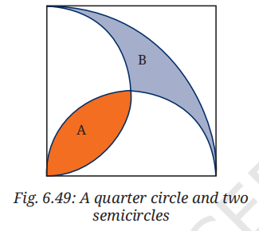
Image source- NCERT
Solution:
Let the side of the square be
$$ a. $$The quarter circle has radius
$$ a. $$Each semicircle has diameter
$$ a, $$so its radius is
$$ \frac{a}{2}. $$Step 1: Find the area of the quarter circle.
$$ \begin{aligned} \text{Area of Quarter Circle} &=\frac14\pi a^2. \end{aligned} $$Step 2: Find the area of one semicircle.
The radius of each semicircle is
$$ \frac{a}{2}. $$Hence,
$$ \begin{aligned} \text{Area of Semicircle} &=\frac12\pi\left(\frac{a}{2}\right)^2\\[4pt] &=\frac12\pi\cdot\frac{a^2}{4}\\[4pt] &=\frac{\pi a^2}{8}. \end{aligned} $$The two semicircles together have area
$$ \begin{aligned} 2\times\frac{\pi a^2}{8} &=\frac{\pi a^2}{4}. \end{aligned} $$Step 3: Compare the areas.
The total area of the two semicircles is equal to the area of the quarter circle.
$$ \boxed{ \frac{\pi a^2}{4} = \frac{\pi a^2}{4}. } $$Step 4: Compare the shaded regions.
The common part of the two semicircles is the shaded region
$$ A. $$The part of the quarter circle outside the semicircles is the shaded region
$$ B. $$Since the total area of the two semicircles is equal to the area of the quarter circle, removing the common overlapping part from one side leaves exactly the same remaining area on the other side.
Therefore,
$$ \boxed{ \text{Area}(A)=\text{Area}(B). } $$Hence, the two shaded regions have equal areas.
$$ \boxed{ \text{Area of Region }A = \text{Area of Region }B. } $$Hence Proved.
Question 22.
In Fig. 6.50, four semicircles have been drawn within the given square whose side is $2$ units.
The centres of these semicircles are the midpoints of the sides.
They create a $4$-petalled flower (shown in blue).
Find the perimeter and the area of this flower.
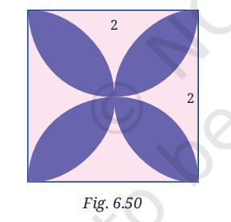
Image source- NCERT
Solution:
Given,
$$ \text{Side of the square}=2\text{ units}. $$Hence, each semicircle has
$$ \text{Diameter}=2\text{ units} $$and radius
$$ r=1\text{ unit}. $$Part (i): Perimeter of the Flower
Each petal is bounded by two arcs.
Each arc is a quarter of a circle of radius
$$ 1. $$Length of one quarter-circle arc is
$$ \begin{aligned} \frac14(2\pi r) &=\frac{\pi r}{2}\\[4pt] &=\frac{\pi}{2}. \end{aligned} $$Each petal has two such arcs.
Hence, the perimeter of one petal is
$$ \begin{aligned} 2\times\frac{\pi}{2} &=\pi. \end{aligned} $$There are
$$ 4 $$identical petals.
Therefore, the total perimeter of the flower is
$$ \begin{aligned} 4\times\pi &=4\pi\text{ units}. \end{aligned} $$Part (ii): Area of the Flower
The flower consists of
$$ 4 $$identical petals.
Step 1: Area of one petal.
One petal is formed by the overlap of two quarter circles of radius
$$ 1. $$The area of one petal is
$$ \begin{aligned} 2\left(\frac{\pi}{4}\right)-1 &=\frac{\pi}{2}-1. \end{aligned} $$The value
$$ 1 $$is the area of the isosceles right triangle enclosed by the two radii.
Step 2: Area of the complete flower.
$$ \begin{aligned} \text{Area of Flower} &=4\left(\frac{\pi}{2}-1\right)\\[4pt] &=2\pi-4. \end{aligned} $$Answer:
Perimeter of the flower
$$ \boxed{4\pi\text{ units}} $$Area of the flower
$$ \boxed{2\pi-4\text{ square units}} $$Approximate Values:
Using
$$ \pi\approx3.14, $$ $$ \boxed{\text{Perimeter}\approx12.56\text{ units}} $$ $$ \boxed{\text{Area}\approx2.28\text{ square units}} $$Question 23.
In Fig. 6.51, two concentric circles have a common centre $O$.
A chord $BC$ of the larger circle is drawn, touching the smaller circle at $A$.
The length of $BC$ is $l$.
Show that the area of the green region enclosed between the two circles is
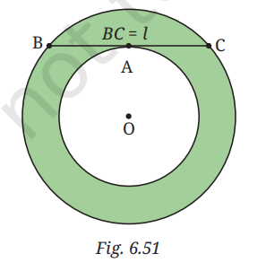
Image source- NCERT
Solution:
Let
$$ R=\text{radius of the larger circle}, $$and
$$ r=\text{radius of the smaller circle}. $$Step 1: Use the property of the tangent.
The chord $BC$ is tangent to the smaller circle at $A$.
Hence, the radius
is perpendicular to the chord
$$ BC. $$Also, the perpendicular from the centre of a circle to a chord bisects the chord.
Therefore,
$$ AB=AC=\frac{l}{2}. $$Step 2: Apply Pythagoras' Theorem.
In right-angled triangle $OAB$,
$$ OB=R, $$ $$ OA=r, $$and
$$ AB=\frac{l}{2}. $$Using Pythagoras' Theorem,
$$ \begin{aligned} OB^2 &=OA^2+AB^2\\[4pt] R^2 &=r^2+\left(\frac{l}{2}\right)^2. \end{aligned} $$Hence,
$$ \boxed{ R^2-r^2=\frac{l^2}{4}. } $$Step 3: Find the area of the green region.
The green region is the area between the two circles.
Therefore,
$$ \begin{aligned} \text{Area} &=\pi R^2-\pi r^2\\[4pt] &=\pi(R^2-r^2). \end{aligned} $$Substitute
$$ R^2-r^2=\frac{l^2}{4}. $$ $$ \begin{aligned} \text{Area} &=\pi\left(\frac{l^2}{4}\right)\\[4pt] &=\frac14\pi l^2. \end{aligned} $$Hence,
$$ \boxed{ \text{Area of the green region} = \frac14\pi l^2. } $$Hence Proved.
Question 24.
In Fig. 6.52, semicircles have been drawn on all the sides of a right-angled triangle as shown.
Show that
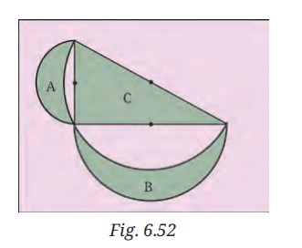
Image source- NCERT
Solution:
Let the right-angled triangle be
$$ \triangle ABC, $$where
$$ \angle A=90^\circ. $$Semicircles are drawn on the three sides of the triangle.
- Region $A$ lies in the semicircle on one leg.
- Region $B$ lies in the semicircle on the other leg.
- Region $C$ lies inside the semicircle on the hypotenuse.
Step 1: Use Pythagoras' Theorem.
Let the lengths of the legs be
$$ a\quad\text{and}\quad b, $$and let the hypotenuse be
$$ c. $$Then,
$$ \boxed{ a^2+b^2=c^2. } $$Step 2: Find the areas of the semicircles.
The area of a semicircle with diameter $d$ is
$$ \begin{aligned} \text{Area} &=\frac12\pi\left(\frac d2\right)^2\\[4pt] &=\frac{\pi d^2}{8}. \end{aligned} $$Therefore, the areas of the semicircles on the three sides are
$$ \frac{\pi a^2}{8}, \qquad \frac{\pi b^2}{8}, \qquad \frac{\pi c^2}{8}. $$Using
$$ a^2+b^2=c^2, $$we obtain
$$ \begin{aligned} \frac{\pi a^2}{8} + \frac{\pi b^2}{8} &=\frac{\pi c^2}{8}. \end{aligned} $$Thus,
$$ \boxed{ \text{Area of semicircle on }a + \text{Area of semicircle on }b = \text{Area of semicircle on }c. } $$Step 3: Compare the coloured regions.
Each semicircle consists of
- the triangle, and
- the coloured region adjoining it.
The same right-angled triangle is common in the decomposition of the three semicircles.
Subtracting the area of the triangle from both sides of the above equality leaves only the coloured regions.
Hence,
$$ \boxed{ \text{Area}(A) + \text{Area}(B) = \text{Area}(C). } $$Therefore,
$$ \boxed{ \text{Area}(A)+\text{Area}(B)=\text{Area}(C). } $$Hence Proved.
Question 25.
Fig. 6.53 shows two congruent circles passing through each other's centres.
Find the area of the region enclosed by the two circles in terms of the common radius $r$.
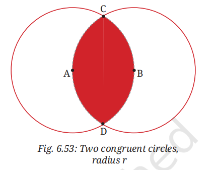
Image source- NCERT
Solution:
Let the centres of the two circles be
$$ O_1 \quad\text{and}\quad O_2. $$Each circle has radius
$$ r. $$Since each circle passes through the centre of the other,
$$ O_1O_2=r. $$Let the two circles intersect at points
$$ C \quad\text{and}\quad D. $$Step 1: Find the angle subtended by the common chord.
In triangle
$$ \triangle O_1O_2C, $$we have
$$ O_1O_2=O_2C=O_1C=r. $$Hence,
$$ \triangle O_1O_2C $$is an equilateral triangle.
Therefore,
$$ \angle CO_1O_2 = 60^\circ. $$Similarly,
$$ \angle DO_1O_2 = 60^\circ. $$Hence, the angle subtended by chord
$$ CD $$at each centre is
$$ \boxed{120^\circ.} $$Step 2: Find the area of one circular segment.
Area of the sector of angle
$$ 120^\circ $$is
$$ \begin{aligned} \text{Area of Sector} &=\frac{120}{360}\pi r^2\\[4pt] &=\frac{\pi r^2}{3}. \end{aligned} $$The triangle inside the sector is an equilateral triangle of side
$$ r. $$Its area is
$$ \begin{aligned} \text{Area of Triangle} &=\frac{\sqrt3}{4}r^2. \end{aligned} $$Therefore, the area of one circular segment is
$$ \begin{aligned} \text{Area of Segment} &=\frac{\pi r^2}{3} - \frac{\sqrt3}{4}r^2. \end{aligned} $$Step 3: Find the area of the common region.
The shaded region consists of two identical circular segments.
Hence,
$$ \begin{aligned} \text{Required Area} &=2\left( \frac{\pi r^2}{3} - \frac{\sqrt3}{4}r^2 \right)\\[4pt] &=\frac{2\pi r^2}{3} - \frac{\sqrt3}{2}r^2. \end{aligned} $$Taking
$$ r^2 $$common,
$$ \boxed{ \text{Required Area} = r^2 \left( \frac{2\pi}{3} - \frac{\sqrt3}{2} \right). } $$Answer:
$$ \boxed{ \text{Area enclosed by the two circles} = r^2 \left( \frac{2\pi}{3} - \frac{\sqrt3}{2} \right). } $$Hence Proved.
Question 26.
In Fig. 6.54, we see three triangles within a rectangle.
The areas of the triangles are $A$, $B$, $C$, as marked.
Show that the area of the rectangle is
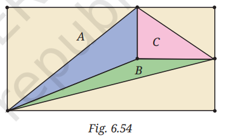
Image source- NCERT
Solution:
Let the rectangle have
$$ \text{Length}=l \qquad\text{and}\qquad \text{Breadth}=h. $$Let the vertical line inside the rectangle divide the length into two parts
$$ x \quad\text{and}\quad l-x. $$Also, let the point on the vertical line be at a height
$$ y $$from the bottom of the rectangle.
Step 1: Write the expressions for the given areas.
The blue triangle has base
$$ h $$and perpendicular distance
$$ x. $$Hence,
$$ \boxed{ A=\frac12hx. } $$The green triangle has base
$$ l $$and height
$$ y. $$Therefore,
$$ \boxed{ B=\frac12ly. } $$The pink triangle has base
$$ l-x $$and height
$$ h-y. $$Hence,
$$ \boxed{ C=\frac12(l-x)(h-y). } $$Step 2: Find the expressions for $A+C$ and $B+C$.
Adding the first and third equations,
$$ \begin{aligned} A+C &=\frac12hx+\frac12(l-x)(h-y)\\[4pt] &=\frac12l(h-y). \end{aligned} $$Similarly,
$$ \begin{aligned} B+C &=\frac12ly+\frac12(l-x)(h-y)\\[4pt] &=\frac12h(l-x). \end{aligned} $$Step 3: Multiply the two expressions.
$$ \begin{aligned} (A+C)(B+C) &=\frac12l(h-y)\times\frac12h(l-x)\\[4pt] &=\frac14lh(l-x)(h-y). \end{aligned} $$From the expression for $C$,
$$ \begin{aligned} C &=\frac12(l-x)(h-y). \end{aligned} $$Therefore,
$$ (l-x)(h-y)=2C. $$Substitute this into the previous equation.
$$ \begin{aligned} (A+C)(B+C) &=\frac14lh(2C)\\[4pt] &=\frac12lhC. \end{aligned} $$Step 4: Find the area of the rectangle.
The area of the rectangle is
$$ lh. $$Hence,
$$ \begin{aligned} lh &=\frac{2(A+C)(B+C)}{C}. \end{aligned} $$Therefore,
$$ \boxed{ \text{Area of Rectangle} = \frac{2(A+C)(B+C)}{C}. } $$Hence Proved.
Question 27.
In the figure we see two shaded regions formed by a quarter circle,
a semicircle, and a triangle.
Show that the areas of the two shaded regions are equal.
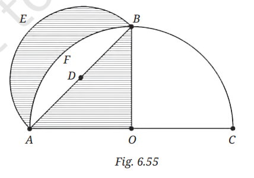
Image source- NCERT
Solution:
Let
- $O$ be the centre of the quarter circle.
- $AO=OB=r$.
- $AB$ be the diameter of the semicircle.
Since
$$ AO\perp OB, $$triangle
$$ \triangle AOB $$is right-angled at
$$ O. $$Step 1: Area of the Quarter Circle.
The radius of the quarter circle is
$$ r. $$Therefore,
$$ \begin{aligned} \text{Area of Quarter Circle} &=\frac14\pi r^2. \end{aligned} $$Step 2: Area of Triangle $AOB$.
Since
$$ AO=OB=r, $$the area of the triangle is
$$ \begin{aligned} \text{Area}(\triangle AOB) &=\frac12\times r\times r\\[4pt] &=\frac12r^2. \end{aligned} $$Step 3: Area of the Semicircle.
The diameter of the semicircle is
$$ AB. $$Using Pythagoras' Theorem,
$$ \begin{aligned} AB &=\sqrt{AO^2+OB^2}\\[4pt] &=\sqrt{r^2+r^2}\\[4pt] &=r\sqrt2. \end{aligned} $$Hence, its radius is
$$ \frac{r\sqrt2}{2}. $$Therefore,
$$ \begin{aligned} \text{Area of Semicircle} &=\frac12\pi\left(\frac{r\sqrt2}{2}\right)^2\\[4pt] &=\frac12\pi\cdot\frac{2r^2}{4}\\[4pt] &=\frac14\pi r^2. \end{aligned} $$Step 4: Compare the shaded regions.
The left shaded region is
$$ \text{Semicircle}-\text{Common Region}. $$The right shaded region is
$$ \text{Quarter Circle}-\text{Common Region}. $$Since
$$ \text{Area of Semicircle} = \text{Area of Quarter Circle}, $$subtracting the same common region from both gives equal remaining areas.
Hence,
$$ \boxed{ \text{Left Shaded Area} = \text{Right Shaded Area}. } $$Therefore, the two shaded regions are equal in area.
$$ \boxed{ \text{Area of Region I} = \text{Area of Region II}. } $$Hence Proved.